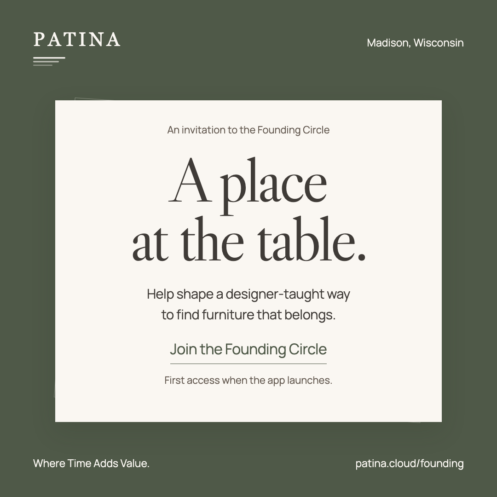
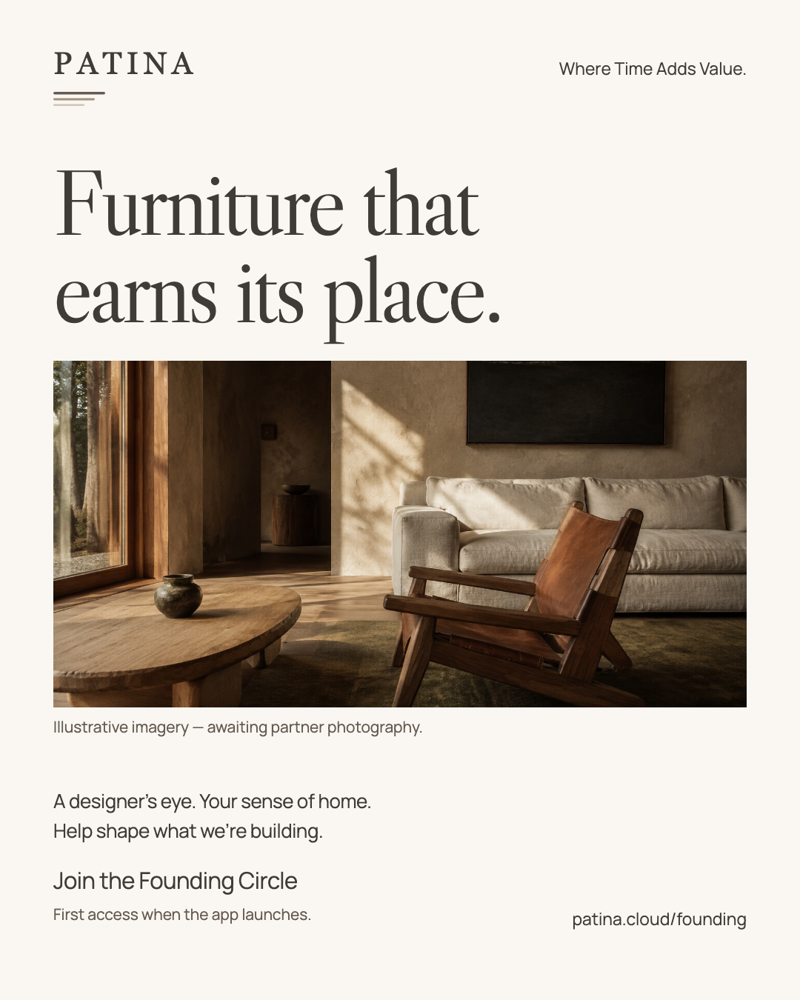
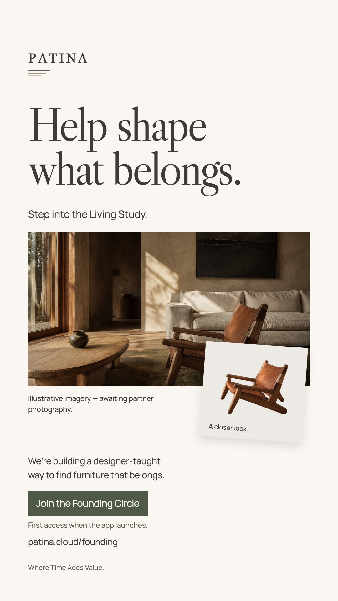
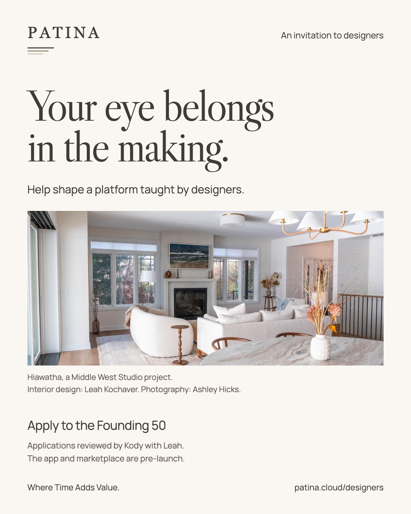
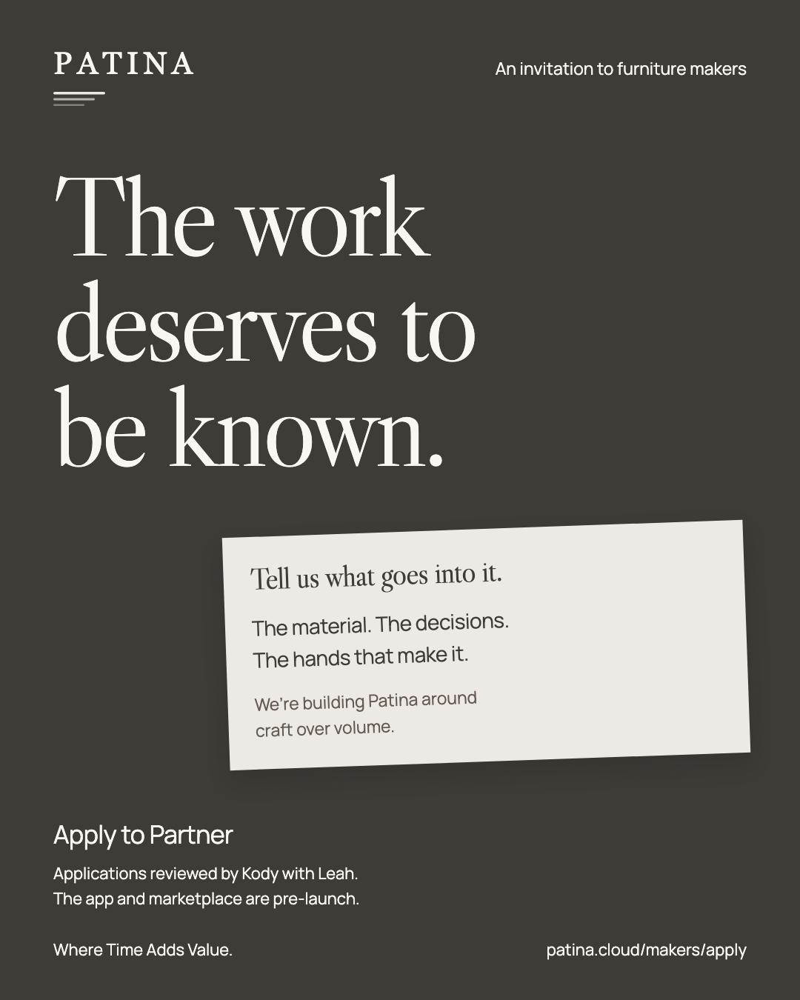
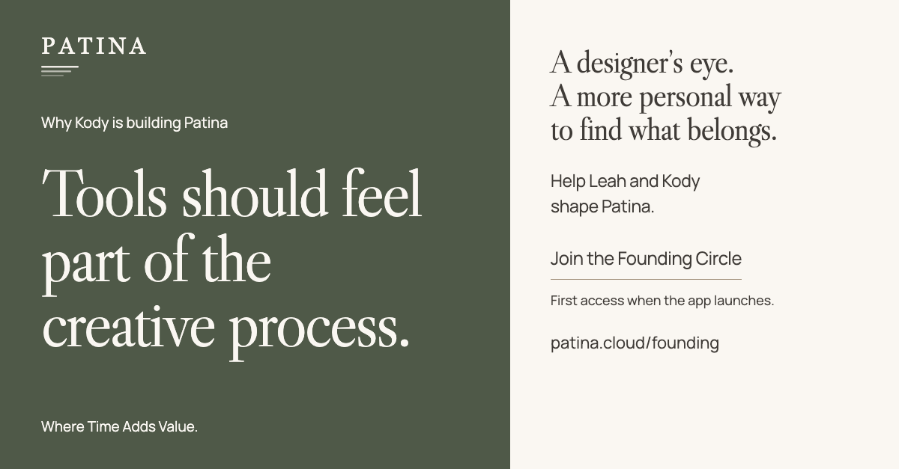

Founding members
People who care about how their home comes together. Invite their judgment, their questions, and the things they notice.
Join the Founding Circle
The Living Study launch collection
A personal introduction.
A founding community.
A thoughtful next chapter.
Where Time Adds Value.

Illustrative imagery — awaiting partner photography.
The direction
Leah’s clients first. Madison press next. Thoughtful designer and maker conversations alongside them. Let the new website give each invitation somewhere meaningful to land.
People who care about how their home comes together. Invite their judgment, their questions, and the things they notice.
Join the Founding CircleWorking designers who want their experience represented in the tools. Kody opens the conversation; Leah brings a peer’s perspective.
Apply to the Founding 50People whose materials and decisions deserve more space in furniture discovery. Begin by understanding their actual work.
Apply to PartnerThe founder story
Through Middle West Studio, Leah brings the judgment of a working interior designer: the person living in a room, the things they already love, the scale of a piece, and the way a material feels.
Her voice should show us something worth noticing. A room begins with the person living in it.
Design & Experience
The tools around creative work can feel sterile and detached from the work itself. Kody is building Patina to make room for exploration, connections, and changing your mind.
His voice should explain a real choice in the making. The tool should belong in the process.
Technology & Product
We’re building a more personal way to discover furniture, with a designer’s judgment, a maker’s care, and your own point of view.
Read the full narrative and interview guideThe member experience
The existing signup email explains why Patina is being built and invites a reply.
Already implementedA personal question about the furniture that has earned its place.
EMAIL-08What would you want a designer to understand before you met?
EMAIL-09The first monthly question asks which area of furniture to explore more closely.
EMAIL-10What membership carries
First access when the app launches. Monthly questions. Studio notes. Enduring founding status. Recognition at launch for members who choose it.
What makes it personal
Read the replies together. Record what they change. Skip a generic prompt when a real conversation is already underway.
The six-week launch
Up to ten appropriate client invitations. Read the first replies, then open the public invitation with two posts.
Three individually chosen editorial approaches. Begin a small number of designer and maker conversations.
Eligible personal followups, public trade invitations, and two more relevant Madison approaches.
Read Day-21 replies and prepare the monthly question. A regional pitch needs a real local connection.
The first monthly question goes to members reaching Day 30. At most two regional pitches with a clear fit.
Report what was learned, what changed or remains open, and what members will help shape next.
T0 is the first approved client invitation. No public launch date or event is assigned. Keep the flexible slots open for genuine replies and reporting opportunities.
Open the complete calendar with owners and asset IDsThe correspondence
Leah opens the invitation through her relationships. Kody welcomes people when they join and keeps the building story personal.
Ten complete messages are ready for review, from the first invitation through the first monthly question.
Open the email collectionPersonalize with a real detail when appropriate. Stop prospect followups after a reply, signup, application, decline, or opt-out.
Something Kody and I are building
Hi,
I wanted you to see something Kody and I have been working on.
Through Middlewest Studio, I spend a lot of time thinking about what makes a piece right for a room. Its size and material matter. So do the things you already love, the way you live, and what you want the room to become.
We’re building Patina to bring more of that designer’s eye within reach. A more personal way to discover furniture, with a path to working with a designer when you want to take things further.
Our new website is open. The app and marketplace are still in development.
Warmly,
Leah
The campaign artwork

C01 / Founding invitation · 1080 × 1080
C02 / Furniture study · 1080 × 1350
C03 / Story · 1080 × 1920
C04 / Designers · 1080 × 1350
C05 / Makers · 1080 × 1350
C06 / Kody’s perspective · 1200 × 627Exported PNGs and editable masters are included. Keep the visible illustrative labels and documentary credits. Founder portraits can follow.
Open the gallery and download individual artworkThe studio in motion


A place at
the beginning.
Illustrative imagery — awaiting partner photography.
Let movement feel connected: a room opens, attention settles on a piece, the making comes into view, then the invitation holds. Use the full timed storyboard for production.
Readable on-screen copy, no flashing or rapid cuts, and an unhurried final action. The finished C03 static Story carries the same invitation without motion.
The earned introduction
The announcement
The Living Study introduces the founders’ approach and a way to help shape it. The release is factual and quote-free. Add the real dispatch date when sending.
Ten researched targets include Chicago and Minneapolis options. Regional coverage needs actual local relevance; two routes have explicit verification holds.
Read the complete press kitThe measure of a useful launch
Visitors and pageviews. Founding Circle signups. Designer and maker applications. Popular pages, referral sources, and the journey from a website visit to joining.
Signup totals use server confirmations and count each PostHog person once across the selected period. Browser copies do not inflate the total.
Open Patina Cloud Traffic & SignupsTraffic is consent-dependent. The funnel measures linked visitors. New member growth is reconciled against non-test enrollment records.
| Founding members | 25 new non-test enrollments |
|---|---|
| Designers | 4 applications worth a conversation |
| Makers | 2 applications worth a conversation |
| Member replies | 5 substantive responses |
| Editorial interest | 1 journalist conversation |
Proposed planning targets, not forecasts. Rebase after Week 2 using the actual reachable audience. Program caps are separate.
The operating rhythm
Choose the relationships. Personalize the client note. Bring design observations into the public copy. Help interpret the replies.
Coordinate publishing and press. Send the product and trade correspondence. Handle replies, application queues, and measurement.
Proposed capacity allowances, plus a one-time joint review. No allocation has been accepted on anyone’s behalf.
Base plan: $0 incremental media spend. Existing subscriptions and founder time remain costs. No paid campaign or event is required.
Keep the published application response windows: designers within seven days, makers within two weeks.
The working collection
Where Time Adds Value.
Complete draft collection. Editable sources included.